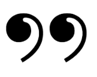

Всем привет
Сегодня получил леметированную жабку на камне, товар сделан действительно на совесть, рисунок в реальности выглядит сногшибательно, сразу видно, что человек делающий это вложил всю душу и силы в этот простой, по мнению обычных обывателей, камушек, сделав из него произведение искусства, которым можно любоваться часами, да что уж там, такое творение нужно в музей выставлять.
Плюс к этому всему ещё и лаком покрыли для лучшей сохранности товара.
Огромное спасибо жабийшоп🐸🐸🐸🐸🥰👍👍👍
Александр Чаповский
Магазинчик классный! заказывала жабу на камне. цена доступная мне, студентке, ха-ха , а жабка умилительная, и стиль работы мне очень нравится! когда заказывала не было ощущения того что совершаются какие-то безэмоциональные равнодушные товарноденежные операции (терпеть не могу когда так), видно, что художник хочет сделать работу, которая доставит радость покупателю/заказчику, при этом не отходя от своего стиля (для меня это очень удобно, потому что понятно дело стиль художника мне нравится и к тому же я не очень сильна в продумавании деталей и цветовой гаммы! но если в ладах с такого рода вещами, то, думаю, вы с художником вместе составите отличную команду хахаха). спасибо, жабий магазин! обязательно закажу еще сшитую жабку! мне кажется, что она украсит мою cutethings’ shelf :).
Вера Листовская
Интересная манера исполнения, уникальный стиль, невообразимый талант и огромная любовь к жабам, эти и множество других словосочетаний описывают одного прекрасного художника, имя которой сразу приходит на ум - Александра. Смотря ее работы, можно проследить ее рост, как художника, это колоссальный, титанический труд, далеко не каждый способен на это. Смотря ее работы, испытываешь эстетический стресс, картины вызывают эмоции, похлеще драматического романа или спектакля. Как в свое время писал Том Стоппард: " Художником можно стать двумя способами. Первый: делать то, что все считают искусством. Второй: заставить всех считать искусством то, что делаешь ты", и эти слова прекрасно описывают данную ситуацию. Есть инертная масса людей, которые извращают искусство , делая однотипные вещи, называя это " трендом", но не в данном случае. Работы Александры заслуживают уважения, их приятно смотреть и всматриваться, в самую глубину, в саму суть. Я - как зритель ваших произведений - хотел сказать "Спасибо!" , за эмоции, за красоту, за настоящее искусство. Желаю Александре удачи в творчестве и больших успехов!!!!
Арсений Мощицкий
Огромное спасибо Александре, заказанный магнитик прекрасен, ручная работа высшего качества.
В подарок была добавлена очень милый постер, было очень приятно его прочитать.
Еще раз спасибо, работа выполнена с душой и изяществом))🐸😍
Евгений Максимов
Отзыв5 жаба отзыв отзыв отзыв отзыв отзыв отзыв
Подпись